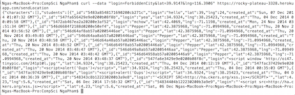

Security Assessment of WhereInTheWorld
Prepared by Nga Pham - December 4, 2014
Introduction
This assessment tests the security of WhereInTheWorld web application, made by Leo Choi. WhereInTheWorld web server takes in and processes the user's login, latitude and longtitude. The application can (1) submit check-in and return a JSON string that can be used by mmap web application, (2) look for a login and retun a JSON string with all the check-ins associated with a particular login, (3) display all check-ins on a webpage, (4) return a live copy of the JSON string containing the RedLine's location and time information.
Methodology
First, I performed "black box" testing, using curl to send scripts and few obscure data such as invalid coordinates. Then I looked at my partner's code, and find several security problems.
Abstract of Findings
A big security problem in this web application is not validating user's inputs. The users can submit false information, unexpectedly formatted inputs which can crash the web application.
Issues Found
1. Cross Site Scripting
- Location: Inside the function app.post('/sendLocation'... (line 27-50)
- I found this issue when injecting a script into the server using curl. This web application does not check for invalid user input for login, and does not set restriction on the number of characters, so I could embed a script into the HTML page.
- Severity: high. The above script injection creates annoying alert, affecting every user who uses the page. In more severe degree, hacker can inject a script to fill up the whole database, and crash the server.
- Prevention and protection: To fix this issue, go back to the server and delete the script that causes the alert. In the future, it is important to pay attention to angle brackets because that usually means there is a script. When detect a < or >, convert them to hange < and > before storing the data in the database and displaying the data to the web page.
2. Request Injection Attacks
- Location: Inside the app.get('/locations.json'... function (line 52-66)
- Severity: low. Fortunately, this program does not store any confidential information from the user. Thus, this loophole does not pose a serious threat to leak of personal data. In addition, every check-in is shown on https://rocky-plateau-3328.herokuapp.com/. This can pose a huge security issue if the database stores a lot of confidential information from the user. In this case, this hack will expose other users' information to the Internet.
- Prevention and protection: This problem can be resolved by converting your query result into type string before you search it in the database. For example, you can use parseString(request.query)
3. Access Allow Origin
- I found this issue by looking at the code.
- By using response.header('Access-Control-Allow-Origin', '*'), this program allows every origin to request data from this web application. This means that every origin can send xhr request and retrieve data from your database. This poses a security of your resources being access by more sites than you wanted to, and in a lot of cases, you don't want that to happen. For example, if you work in an oil company that has data of amount of oil being produced per second, you don't want every person, including your competitors to access your company's data.
- Severity: low. With this web application, allowing every origin to access the database won't pose a severe security threat. It's fine that every one has access to these data because they are not very important.
- Prevention and protection: Instead of allowing every website to access your web application, response.header('Access-Control-Allow-Origin', '*''), allow only specific domains to access your data. Create a white list as the second parameter. For example, if you want only Tufts to access your website, include response.header('Access-Control-Allow-Origin', 'http://www.tufts.edu/');
4. Manually typing in data
- Location: Inside the function app.post('/sendLocation'... (line 27-50)
- I found this issue by injecting data with curl and looking at the code.
- (1) You can use curl to send fake location to the server: curl --data "login=ForbiddenCity&lat=39.9147&lng=116.3906" https://rocky-plateau-3328.herokuapp.com/sendLocation =116.3906", and receive the JSON string back without having to send real location.


Similarly, anyone can send in fake login. This information is then sent to Marauder Map, and other domains that request it.
(2) The user can write his or her own Marauder Map to send fake information there. However, it is not a huge issue in this program because Leo Choi's Marauder Map sends real location.
- Severity: medium. If the user doesn't send real information, Marauder Map won't display properly because there are fake coordinates on the map.
- Prevention and protection: Although it's unavoidable, but minimize the chance that the user can send fake information. For example, you can create user authentication, checking if login is valid.
Conclusion
Most of these security issues arise from putting too much trust on user's input. Following these considerations will reduce security problems. Moving forward, it is important to check client's input (especially its format because unexpected format is likely a script), and allow access to certain origins. It is also recommended to consult more experienced hacker (there will likely be a cost).